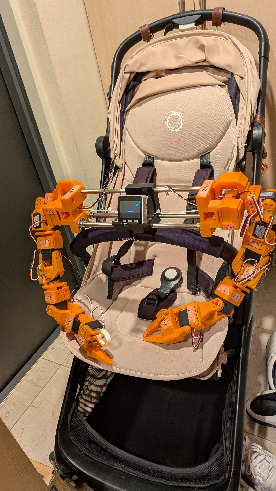
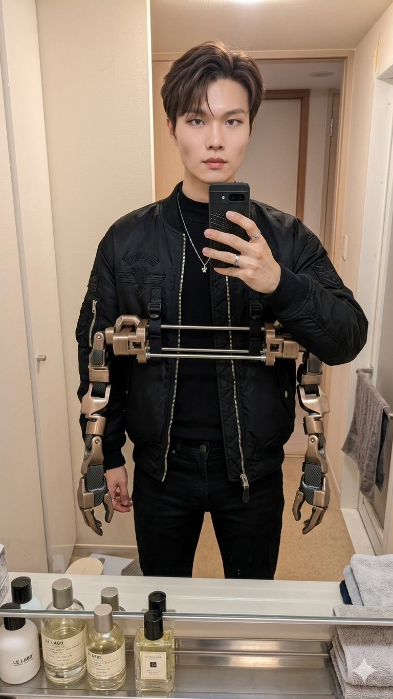

生成AIの登場から4年。対話 → 推論 → 自律 → 身体と、毎年スタックの一段上が解けていく。
2025年の「エージェント」は、2026年のフィジカルAIを駆動するための頭脳になった。
学習時のスケーリングに加え、推論時スケーリング（Test-Time Compute）が主流に。
同じモデルでも「考える時間」を伸ばすほど数学・コード・科学の性能が上がる、という実証が2025年に固まった。
2026年はExtended Thinkingが全モデルで標準装備。コストは「1回の応答」ではなく「1回の思考時間」で積まれる。
Claude Code / Cursor / Devin など、ターミナル常駐型のコーディングエージェントが実務で主流化。
設計書 → 実装 → テスト → PR まで一気通貫で走り、人間はレビュー・ディレクション・判断にシフト。
「AIに書かせる時間」と「人が読む時間」のバランス設計が、2026年のエンジニアの腕の見せ所。
2025年に仕様が固まったMCPとA2Aは、2026年になってエコシステムの前提になった。
モデルはMCPでツールを握り、エージェントはA2Aで会話する。この2層分離が整理されたことで、スタックは一気にモジュール化された。
言語モデルは「次のトークン」を当てるが、World Modelは「次のフレーム・次の物理」を当てる。
Genie系・Cosmos・V-JEPA系の流れで、動画＝世界の記述という前提が広がった。
ロボットは仮想世界で数万時間試行してから現実に出る——その学習基盤が2026年の鍵。
VLA（Vision-Language-Action）モデルと量産型ヒューマノイドが同時に立ち上がり、2026年はRobotics Foundation Modelが1つの市場になった。
クラウドの巨人たちが、いま現場に降りてきている。
ここからは、研究の受け売りではなく自分で動かしている話。
フィジカルAIを「作って・着て・踊らせる」——ウェアラブル・デュアルアームのケーススタディ。

コードで教えるのではなく、人の動きをそのまま転写する。
そのために、人が着る7軸×2本のデュアルアームをゼロから設計した。
SO-ARM101に upper_arm_roll / forearm_roll を追加した独自7-DOF構成。

バニラの人工授粉を人がこなしている映像。
花弁を傷めず、柱頭に花粉を運ぶ——指先ミリ単位の精密作業。
これが、ロボットが越えるべき腕と手先のハードル。
遠隔で解いた成功例が、次の自律のための教師データになる。
Phase 1 は、タスクを解くと同時に学習データ工場として動く設計。
2025年：AIが喋り、連携した。 2026年：AIが身体を持つ。
現場で勝つのは、モデル × データフライホイール × 泥臭いハードを全部握れるチーム。
研修の次のアクションは「触ってみる」——買う・借りる・組む、どれでもいい。